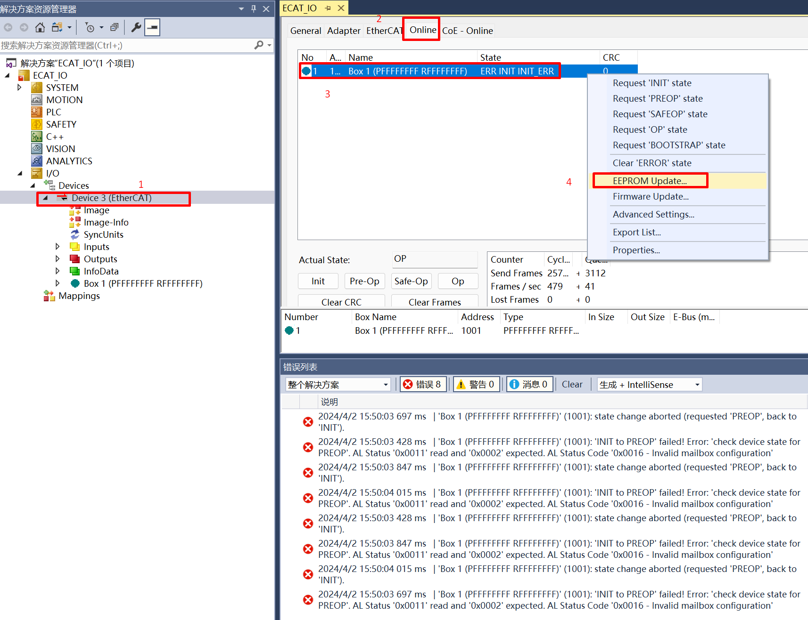
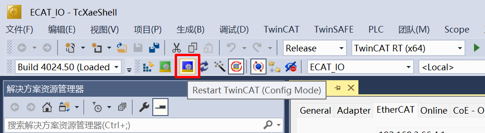

12.3. ECAT_IO
12.3.1. 1. Overview
The ECAT_IO example demonstrates the steps to implement an ECAT digital IO slave station with the slave stack code (SSC).
This routine program supports initializing the EEPROM data of the ESC, simplifying the process of updating the ESC’s EEPROM.
If the program code contains EEPROM data (eeprom.h) generated by the SSC Tool, it will check the data stored in the ESC’s EEPROM and update it based on conditions.
If the checksum of the EtherCAT Slave Controller Configuration Area (the first 8 words) of the EEPROM failed, the EEPROM will be initialized with the data from eeprom.h.
If the checksum of the EtherCAT Slave Controller Configuration Area (the first 8 words) of the EEPROM succeeds, will verify the Product Code and Revision Code in the EEPROM data.
When the Product Code differs or the Revision Number in eeprom.h is greater than the Revision Number of the currently stored EEPROM data, the EEPROM will be initialized with the data from eeprom.h.
This method can solve the problem of checksum failure caused by EEPROM being empty during initial use, it will initialize EEPROM. During program upgrades, if the Revision Number in the eeprom.h included in the new program code is greater than the Revision Number of the currently stored EEPROM data, the EEPROM will be initialized with the eeprom.h, eliminating the need to update the EEPROM through master station tools such as TwinCAT.
12.3.2. 2. Prepare
12.3.2.1. 2.1 Hardware
Development board with ECAT, please refer to Pin Description of the development board. Check the ECAT network port/RUN LED/ERR LED and other hardware
PC with Ethernet port
TWinCAT3 software has compatibility issues with PC network cards. some supported Intel network cards
12.3.2.2. 2.2 Software
TwinCAT3.1(Build 4024.56)
SSC Tool(SSC Version: 5.13; Config File Vers: 1.5.3.0)

12.3.3. 3. Project Setting
12.3.3.1. 3.1 EEPROM Emulation Setting
The default setting is to use Flash to simulate EEPROM
Note : Please allocate appropriate flash space for FLASH-EEPROM content to avoid conflicts with other flash contents
12.3.3.2. 3.2 Using actual EEPROM
set the “ESC_EEPROM_EMULATION” and “CREATE_EEPROM_CONTENT” under the “Hardware” attribute to 0 in SSC Tool, then generate the slave protocol stack code.
Modify CMakeLists.txt context to “set(CONFIG_EEPROM_EMULATION 0)”.
12.3.4. 4. Generate EtherCAT slave stack code
Due to licensing issues, HPMSDK does not provide EtherCAT slave protocol stack code (SSC). Users have download the SSC Tool from Beckoff’s official website and generate the slave stack code according to the steps.
12.3.4.1. 4.1. Download SSC Tool
Enter ETG Download website , input “SSC” to filter resource.


Note
To download, you need to provide an ETG member account and a valid vendor ID**
Download and install SSC Tool
12.3.4.2. 4.2 SSC Tool import configuration files
Open SSC Tool, click Tool->Options

click Configurations, import configuration file(<hpm_sdk>/samples/ethercat/ecat_io/SSC/Config/HPM_ECAT_IO_Config.xml)

12.3.4.3. 4.3 SSC Tool create new project
click File->New

Click Custom option, and select HPMicro ECAT Digital IO <HPMicro> from the drop-down list

Save project, specify the file path

import application
Click Tool->Application->Import , Import <hpm_sdk>/samples/ethercat/ecat_io/SSC/digital_io.xlsx


Click OK

12.3.4.4. 4.4 Create slave stack files
Click Project->Create new Slave Files

Specify the output path, the output source folder have to set to <ecat_io sample path>/SSC/Src, if other path, have to copy generated SRC folder to <ecat_io sample path>/SSC/Src

12.3.4.5. 4.5 SSC code change
ESC IP supports generating independent Sync0 Sync1 interrupts, and Sync0 Sync1 requests can also trigger PDI interrupts. To avoid unnecessary PDI interrupts triggered by Sync0 Sync1 requests when using independent Sync0 Sync1 interrupts, AL Event Mask Register (0x204) needs to be set for masking

Execute in the command line window under the SSC directory：patch -d Src < ssc_pdi_mask.patch

Note ：If the patch command is not installed on your PC, you will need to install ver.2.5.9 or a laterversion of GNU patch. If it is already installed, skip this step. Download the patch command (currently ver.2.5.9) from the following Web page and store “patch.exe” in a folder on a path that makes the file executable from the command prompt. http://gnuwin32.sourceforge.net/packages/patch.htm
12.3.5. 5. TwinCAT Project setting
12.3.5.1. 5.1. Add ESI file
Please modify the device attributes in generated ESI ( ECAT-IO.xml ) by SSC tool according to the actual number of ports(<Device Physics=”YY”>), The default attribute generated in ESI is “YY”, indicating that Port0 and Port1 are implemented. If Port0, Port1, and Port2 are actually implemented, please manually modify the attribute to “YYY”.

Copy the ESI( ECAT-IO.xml ) to TwinCAT( C:/TwinCAT/3.1/Config/Io/EtherCAT ).
12.3.5.2. 5.2 Create Project
Open TwinCAT，click File->New->Project

Click TwinCAT Project , after naming, click OK

12.3.5.3. 5.3 Software Configuration
Update network card driver (required for first use)


clock setting
The TwinCAT may report the error during runtime: Init4RTime：Start Interrupt：Ticker started >> AdsWarning4115 （0x1013,RTIME：system clock setup failed）, win8settick.bat needs to run with administrator privileges(C：TwinCAT3.1Systemwin8settick.bat)

12.3.5.4. 5.4 Scan device
Right click Device, then click Scan

Choose correct network

12.3.5.5. 5.5 Update EEPROM context
Double click on the scanned device, click Online , right click Box , then click EEPROM Update 。

For cases where the EEPROM content is empty, it is not possible to find a matching Box when scanning the device. In this case, it is necessary to update the EEPROM content。 *
In the case where EEPROM content is empty, When ESC is powered on to load EEPROM data, a checksum error will occur, which will cause PDI to not work. At this time, EtherCAT communication is possible and EEPROM content can be updated through the main station. *
chosse correct files, click OK , wait for completion

Reset the board, delete the scanned devices and rescanning


12.3.5.6. 5.6 IO Control
Input IO, change DIP switch, “InputCounter” value change in TwinCAT

Output IO, write “OutputCounter” value in Twincat, Output LED change

Check RUN LED and ERR_LED status
12.3.5.7. 5.7 DC setting
Set the synchronization mode of the slave station, where you can set an individual Shift Time for the slave station (Shift Time is used to ensure that all slave stations receive data from the master station before the DC sync event)

Set the synchronization mode of the master station, through the Sync Shift Time of the master station, you can set the shift time for all DC sync mode slave stations (usually 20%~30% of the Sync Unit Cycle time), Actual Shift Time of a single slave station = Shift Time set by the master station + Shift Time set by the slave station

Click Restart TwinCAT (Config Mode), slave stations can enter OP state under DC sync mode. In actual use, tasks should be created in TwinCAT (such as PLC task or NC Task), set the synchronization between slave and master station tasks, activate the configuration, and enter Run Mode to ensure synchronization performance, working under DC sync mode

12.3.6. 6. Running the example
After the project is running correctly, the serial terminal will output the following information, and the input-output IO status corresponds to the TwinCAT project configuration:
When EEPROM data needs to be initialized, the log is as follows:
EtherCAT IO sample
Init EEPROM content.
Init EEPROM content successful.
EEPROM loading successful, no checksum error.
When EEPROM data does not need to be initialized, the log is as follows:
EtherCAT IO sample
No need to init EEPROM content.
EEPROM loading successful, no checksum error.